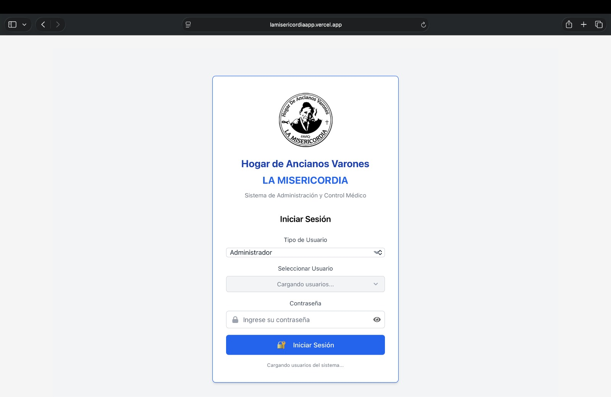
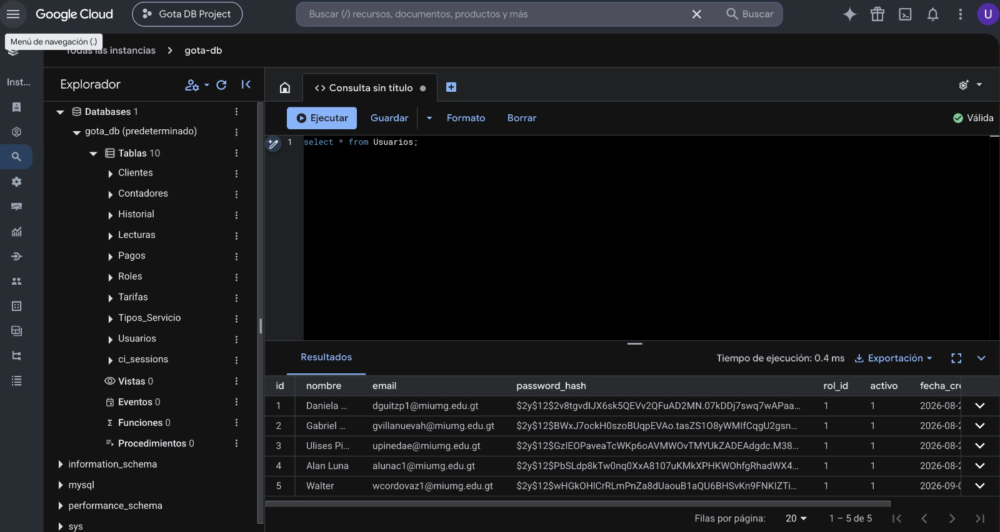
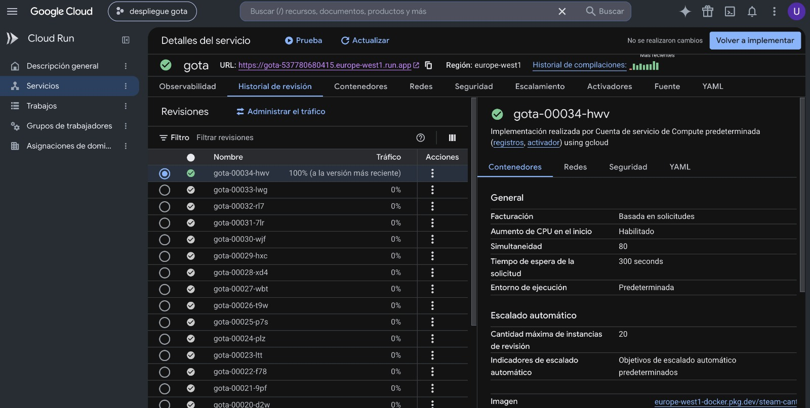
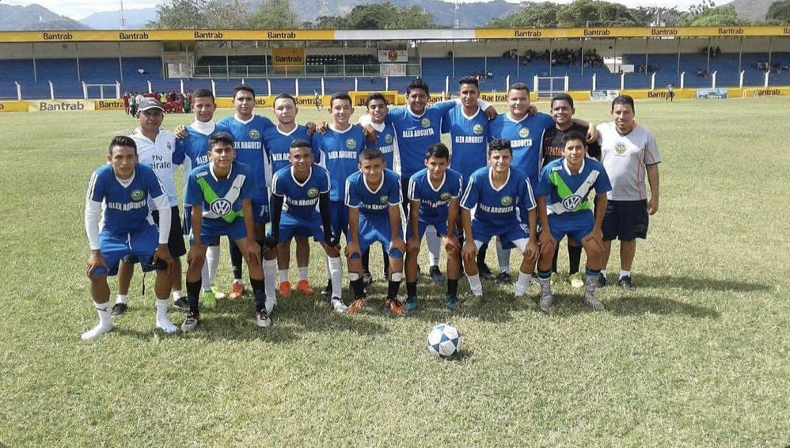

Biografía

Soy Ulises o Uli, como las personas cercanas me llaman. Actualmente me encuentro en el mundo de las ventas y al mismo tiempo soy estudiante de Ingeniería en Sistemas, con una profunda curiosidad por el mundo de la tecnología.
Desde pequeño, me ha fascinado entender cómo funcionan las cosas y cómo puedo contribuir a crear soluciones innovadoras. Actualmente, me encuentro en un proceso de aprendizaje constante, explorando áreas como el desarrollo web y móvil, inteligencia artificial, el diseño de arquitecturas de software eficientes, así como procesos de ventas, relaciones interpersonales y estudios de mercado.
Me considero una persona autodidacta, perseverante y con una gran capacidad para adaptarme a nuevos desafíos. Mi objetivo es combinar mis conocimientos técnicos, mi capacidad para relacionarme con otras personas y mi creatividad para desarrollar proyectos que generen un impacto positivo en la sociedad. Creo firmemente que la tecnología es una herramienta poderosa para resolver problemas y mejorar la calidad de vida de las personas.
Habilidades e Intereses
- Básico HTML5
- Básico CSS3 / Bootstrap 5
- Básico JavaScript (ES6+)
- Básico SASS/SCSS
- Básico Python
- Intermedio Java
- Intermedio MySQL
- Básico Node.js
- Básico MongoDB
- Intermedio SQLServer
- BásicoOLAP, OLTP, DATAMINIG
- ✔️ Git / GitHub
- ✔️ Visual Studio Code
- ✔️ Linux / MacOs (terminal básico)
- ✔️ intellij IDEA
- ✔️ Office365
- ✔️ Postman
- ✔️ Swagger
- ✔️ Aprendizaje autodidacta
- ✔️ Resolución de problemas
- ✔️ Trabajo en equipo
- ✔️ Adaptabilidad
- Nativo Español
- Intermedio Inglés (lectura/escritura técnica y conversación)
- ✔️ Inteligencia Artificial (exploración)
- ✔️ Metodologías ágiles (Scrum)
- ✔️ Diseño de interfaces centrado en el usuario
- ✔️ Automatización de procesos
Proyectos y Pasatiempos






Visión Profesional
Mi objetivo profesional es convertirme en un ingeniero de software capaz de diseñar, desarrollar y mantener soluciones tecnológicas escalables, seguras y centradas en las personas.
Aspiro a formar parte de equipos internacionales de alto desempeño en empresas tecnológicas líderes como Google, Amazon o Microsoft. Quiero contribuir con proyectos que resuelvan problemas reales, aprender de profesionales con amplia experiencia y aportar una perspectiva comprometida con la calidad, la innovación y el trabajo colaborativo.
Para alcanzar esta meta, continuaré fortaleciendo mis conocimientos en desarrollo web, bases de datos, arquitectura de software, computación en la nube e inteligencia artificial. También seguiré mejorando mi inglés técnico, mis habilidades de comunicación y mi capacidad para trabajar con metodologías ágiles y equipos multiculturales.
Entiendo que crecer profesionalmente requiere disciplina, práctica constante, responsabilidad y la disposición para aprender de cada desafío. Mi propósito es construir una trayectoria internacional basada en resultados, ética profesional y aprendizaje continuo, demostrando que desde Guatemala también es posible crear tecnología con impacto global.
Mi visión es clara: prepararme cada día para ser un profesional global, generar valor en equipos de clase mundial y utilizar la tecnología para construir soluciones que mejoren la vida de las personas.